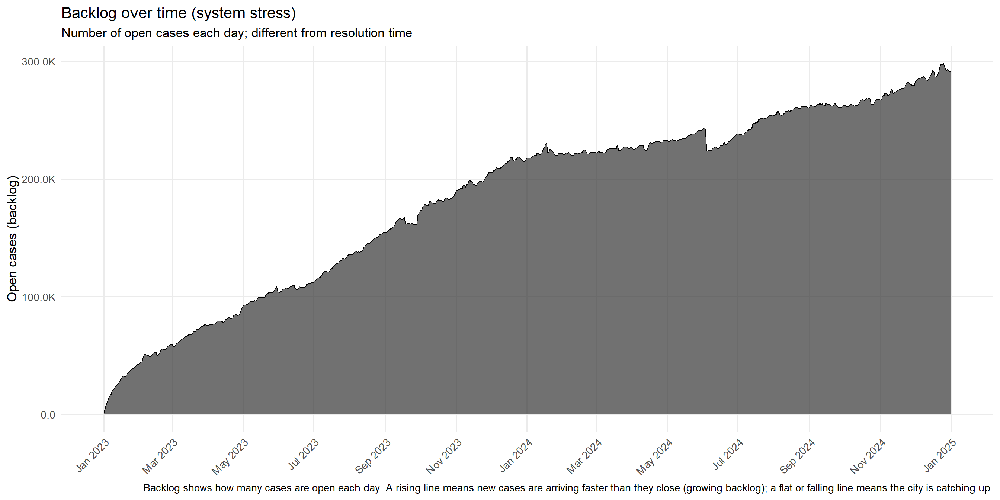

Code
library(dplyr)
library(ggplot2)
library(lubridate)
library(stringr)
library(tidyr)
library(forcats)
library(scales)
library(tidytext)This section walks through what we actually see in the 311 data.
Instead of repeating every statistic, we use a small set of plots where each one is meant to answer a specific question. For each figure, we describe:
library(dplyr)
library(ggplot2)
library(lubridate)
library(stringr)
library(tidyr)
library(forcats)
library(scales)
library(tidytext)There were a unique total of 300 complaint types reported in the dataset. The complaint were bucketed into the following categories for better analysis: Noise Related, Heat/Water/Gas Issues, Buildings and Housing, Sanitation and Waste, Street and Traffic Conditions, Public Safety / Crime / Quality of Life, Vehicle and Parking, Utilities and Power, Pests and Animals, Others / Miscellaneous.
df_clean_final <- readRDS("df_clean_final.rds")
complaint_category_mapping <- list(
"Noise Related" = c(
"Noise - Residential", "Noise - Street/Sidewalk", "Noise - Commercial",
"Noise", "Noise - Vehicle", "Noise - Helicopter", "Noise - Park",
"Noise - House of Worship"
),
"Heat/Water/Gas Issues" = c(
"HEAT/HOT WATER", "Water System", "WATER LEAK", "PLUMBING",
"Water Leak", "Drinking Water", "Water Quality", "Water Maintenance",
"Water Drainage", "Drinking Water General", "Drinking Water Tank",
"Drinking Water Conservation", "Bottled Water", "DEP Sidewalk Condition",
"Non-Residential Heat", "Heat/Hot Water"
),
"Buildings and Housing" = c(
"PAINT/PLASTER", "DOOR/WINDOW", "FLOORING/STAIRS", "APPLIANCE",
"Elevator", "Lead", "SAFETY", "Indoor Air Quality", "Plumbing",
"Boilers", "Electrical", "ELEVATOR", "Asbestos", "Paint/Plaster",
"Door/Window", "OUTSIDE BUILDING", "Wood Pile", "Mold",
"Flooring/Stairs", "Appliance", "Scaffold Safety", "Electric",
"Unstable Building", "Window Guard", "Cooling Tower", "Peeling Paint",
"Facade Insp Safety Pgm", "Outside Building"
),
"Sanitation and Waste" = c(
"UNSANITARY CONDITION", "Dirty Condition", "Missed Collection",
"Residential Disposal Complaint", "Litter Basket Request",
"Commercial Disposal Complaint", "Litter Basket Complaint",
"Sanitation Worker or Vehicle Complaint", "Dumpster Complaint",
"Industrial Waste", "Seasonal Collection", "Institution Disposal Complaint",
"Transfer Station Complaint", "DSNY Internal"
),
"Street and Traffic Conditions" = c(
"Street Condition", "Traffic Signal Condition", "Street Light Condition",
"Sidewalk Condition", "Curb Condition", "Street Sign - Damaged",
"Street Sign - Missing", "Street Sign - Dangling", "Highway Condition",
"Highway Sign - Damaged", "Highway Sign - Missing", "Highway Sign - Dangling",
"Bridge Condition", "Tunnel Condition", "DEP Highway Condition",
"DEP Street Condition"
),
"Public Safety / Crime / Quality of Life" = c(
"Homeless Person Assistance", "Encampment", "Non-Emergency Police Matter",
"Drug Activity", "Graffiti", "Illegal Fireworks", "Panhandling",
"Animal-Abuse", "Violation of Park Rules", "Illegal Posting",
"Hazardous Materials", "Smoking", "Unleashed Dog", "Urinating in Public",
"Disorderly Youth", "Squeegee", "Quality of Life", "Face Covering Violation"
),
"Vehicle and Parking" = c(
"Illegal Parking", "Blocked Driveway", "Abandoned Vehicle",
"Derelict Vehicles", "Broken Parking Meter", "Municipal Parking Facility"
),
"Utilities and Power" = c(
"ELECTRIC", "Sewer", "Root/Sewer/Sidewalk Condition", "Radioactive Material",
"X-Ray Machine/Equipment", "Oil or Gas Spill"
),
"Pests and Animals" = c(
"Rodent", "Animal in a Park", "Unsanitary Pigeon Condition",
"Harboring Bees/Wasps", "Illegal Animal Kept as Pet", "Mosquitoes",
"Pet Shop", "Poison Ivy", "Illegal Animal Sold", "Unsanitary Animal Facility",
"Animal Facility - No Permit", "Unlicensed Dog", "Unsanitary Animal Pvt Property"
),
"Others / Miscellaneous" = c(
"General Construction/Plumbing", "Illegal Dumping", "GENERAL",
"Damaged Tree", "Maintenance or Facility", "New Tree Request",
"For Hire Vehicle Complaint", "Overgrown Tree/Branches", "Consumer Complaint",
"Vendor Enforcement", "Building/Use", "Obstruction", "Air Quality",
"Dead/Dying Tree", "Dead Animal", "Street Sweeping Complaint",
"Taxi Complaint", "Lost Property", "Outdoor Dining",
"Real Time Enforcement", "Mobile Food Vendor", "Bike/Roller/Skate",
"Chronic", "Special Projects Inspection Team (SPIT)", "Illegal Tree Damage",
"Electronics Waste Appointment", "Emergency Response Team (ERT)",
"Food Poisoning", "Smoking or Vaping", "Day Care", "Standing Water",
"Investigations and Discipline (IAD)", "Remaining Taxi Report",
"E-Scooter", "BEST/Site Safety", "Indoor Sewage", "For Hire Vehicle Report",
"Uprooted Stump", "Green Taxi Complaint", "Ferry Inquiry", "Ferry Complaint",
"Beach/Pool/Sauna Complaint", "Tattooing", "Plant", "Bus Stop Shelter Placement",
"LinkNYC", "Bus Stop Shelter Complaint", "Posting Advertisement",
"Taxi Compliment", "AHV Inspection Unit", "Adopt-A-Basket",
"Cranes and Derricks", "Recycling Basket Complaint", "Found Property",
"Incorrect Data", "Bike Rack", "Special Natural Area District (SNAD)",
"Public Toilet", "Dept of Investigations", "Lifeguard", "Special Operations",
"Dispatched Taxi Complaint", "Boiler", "Bench", "Building Condition",
"Taxi Licensee Complaint", "Retailer Complaint", "Calorie Labeling",
"ZTESTINT", "Public Payphone Complaint", "FHV Licensee Complaint",
"Wayfinding SNW", "Leaning", "Bar", "Building Marshal's Office",
"Building Marshals office", "DOB Posted Notice or Order",
"Construction Safety Enforcement", "Tanning", "Executive Inspections",
"Internal", "Code", "Private School", "Vaccine Mandate Non-Compliance",
"Dispatched Taxi Compliment", "SRDE", "Stalled Sites",
"Sustainability Enforcement", "Trans Fat", "Food Establishment",
"Sewer Maintenance", "Bike Rack Condition", "Construction Lead Dust"
)
)
# Create a long-format data frame
complaint_mapping_df <- data.frame(
complaint_type = unlist(complaint_category_mapping),
category = rep(names(complaint_category_mapping),
sapply(complaint_category_mapping, length)),
stringsAsFactors = FALSE
)
rownames(complaint_mapping_df) <- NULL
map_complaint_to_category <- function(complaint_type) {
for (category in names(complaint_category_mapping)) {
if (complaint_type %in% complaint_category_mapping[[category]]) {
return(category)
}
}
return("Others / Miscellaneous")
}
# Apply the mapping to create complaint_bucket column
df_clean_final <- df_clean_final |>
mutate(complaint_bucket = sapply(complaint_type, map_complaint_to_category))
complaint_bucket_counts <- df_clean_final |>
count(complaint_bucket, sort = TRUE)
complaint_bucket_borough <- df_clean_final |>
group_by(borough, complaint_bucket) |>
summarise(count = n(), .groups = "drop") |>
group_by(borough) |>
mutate(
total_borough = sum(count),
proportion = count / total_borough * 100
) |>
ungroup()
print(complaint_bucket_borough)# A tibble: 50 × 5
borough complaint_bucket count total_borough proportion
<chr> <chr> <int> <int> <dbl>
1 BRONX Buildings and Housing 152187 1365908 11.1
2 BRONX Heat/Water/Gas Issues 280270 1365908 20.5
3 BRONX Noise Related 354903 1365908 26.0
4 BRONX Others / Miscellaneous 105631 1365908 7.73
5 BRONX Pests and Animals 14932 1365908 1.09
6 BRONX Public Safety / Crime / Quality of L… 32185 1365908 2.36
7 BRONX Sanitation and Waste 107341 1365908 7.86
8 BRONX Street and Traffic Conditions 49349 1365908 3.61
9 BRONX Utilities and Power 28127 1365908 2.06
10 BRONX Vehicle and Parking 240983 1365908 17.6
# ℹ 40 more rowsTo see how concerns differ across boroughs, we turned these counts into within-borough percentages and plotted them as a Cleveland dot plot, faceted by borough.
# prepare plot data: percent label and reorder within each borough
library(forcats)
library(scales)
library(tidytext)
plot_df <- complaint_bucket_borough |>
mutate(prop_label = paste0(round(proportion, 1), "%"),
complaint_bucket = reorder_within(complaint_bucket, proportion, borough, fun = max))
# Cleveland dot-plot showing proportion (%) and ordered by highest per borough
ggplot(plot_df, aes(x = proportion, y = complaint_bucket)) +
geom_segment(aes(x = 0, xend = proportion, yend = complaint_bucket),
color = "gray80") +
geom_point(aes(color = borough), size = 2) +
facet_wrap(~ borough, scales = "free_y", ncol = 2) +
scale_x_continuous(labels = function(x) paste0(x, "%")) +
scale_y_reordered() +
scale_color_brewer(palette = "Set2") +
theme_minimal() +
theme(
legend.position = "none",
axis.text.x = element_text(size = 7),
axis.text.y = element_text(size = 8),
plot.margin = margin(5, 30, 5, 5) # room for labels
) +
labs(
title = "Complaint Categories by Borough (Cleveland dot plot)",
subtitle = "Proportion of complaints by category within each borough",
x = "Proportion (%)",
y = "Complaint Category"
) +
coord_cartesian(clip = "off")
What stands out
backlog(date) ≈ cumulative complaints created − cumulative complaints closed.
We plotted this as an area chart over the full time window.
library(dplyr)
library(tidyr)
library(ggplot2)
library(scales)
df <- df_clean_final # or your df name
# 1) Get overall date range from created_date -------------------------------
date_range <- df |>
summarise(
start = min(as.Date(created_date), na.rm = TRUE),
end = max(as.Date(created_date), na.rm = TRUE)
)
# 2) Build daily backlog table using ONLY |> --------------------------------
backlog <- df |>
transmute(
created_date = as.Date(created_date),
closed_date = as.Date(closed_date)
) |>
# daily counts of created
count(created_date, name = "n_created") |>
right_join(
tibble(
date = seq(
from = date_range$start,
to = date_range$end,
by = "day"
)
),
by = c("created_date" = "date")
) |>
rename(date = created_date) |>
mutate(n_created = replace_na(n_created, 0L)) |>
# daily counts of closed
left_join(
df |>
filter(!is.na(closed_date)) |>
transmute(closed_date = as.Date(closed_date)) |>
count(closed_date, name = "n_closed"),
by = c("date" = "closed_date")
) |>
mutate(
n_closed = replace_na(n_closed, 0L),
cum_created = cumsum(n_created),
cum_closed = cumsum(n_closed),
open_backlog = cum_created - cum_closed
)
# 3) Plot -------------------------------------------------------------------
caption_text <- paste(
"Backlog shows how many cases are open each day.",
"A rising line means new cases are arriving faster than they close (growing backlog);",
"a flat or falling line means the city is catching up."
)
p_backlog <- ggplot(backlog, aes(x = date, y = open_backlog)) +
geom_area(alpha = 0.7) +
geom_line(linewidth = 0.4) +
scale_y_continuous(
name = "Open cases (backlog)",
labels = label_number(scale_cut = cut_short_scale(), accuracy = 0.1)
) +
scale_x_date(
name = NULL,
date_breaks = "2 months",
date_labels = "%b %Y"
) +
labs(
title = "Backlog over time (system stress)",
subtitle = "Number of open cases each day; different from resolution time",
caption = caption_text
) +
theme_minimal(base_size = 13) +
theme(
axis.text.x = element_text(angle = 45, hjust = 1),
panel.grid.minor = element_blank()
)
p_backlog
What the backlog curve tells us
Next we look at what happens after a complaint is created.
The alluvial (Sankey-style) diagram follows the volume of complaints from:
Year (2023 vs 2024) → Complaint Type (bucket) → Final Status
(Assigned, Closed, In Progress)
Each band’s thickness represents the number of complaints flowing along that path.
library(ggalluvial)
library(ggplot2)
library(dplyr)
library(scales)
# Prepare alluvial data
df_viz <- df_clean_final |>
mutate(
year = year(created_date),
month = floor_date(created_date, "month"),
status_clean = ifelse(status == "", NA, status)
)
df_alluvial <- df_viz |>
filter(!is.na(status_clean)) |>
count(year, complaint_bucket, status_clean)
# Alluvial Plot
ggplot(
df_alluvial,
aes(
axis1 = year,
axis2 = complaint_bucket,
axis3 = status_clean,
y = n
)
) +
geom_alluvium(aes(fill = complaint_bucket), width = 1/10, alpha = 0.8) +
geom_stratum(width = 1/10) +
geom_label(
stat = "stratum",
aes(label = after_stat(stratum)),
size = 3,
fill = "white"
) +
scale_x_discrete(
limits = c("Year", "Complaint Type", "Status"),
expand = c(.05, .05)
) +
labs(
title = "Complaint Flow: Year → Complaint Type → Final Status",
subtitle = "How complaints evolve from originating year to type to closure state",
y = "Number of Complaints",
x = ""
) +
theme_minimal(base_size = 13) +
theme(
legend.position = "none",
plot.title = element_text(face = "bold"),
axis.text.x = element_text(face = "bold")
)
Main patterns
library(tidyverse)
library(lubridate)
library(scales)
library(stringr)
# Optional but recommended for big data speed:
# library(data.table)
theme_report <- function() {
theme_minimal(base_size = 13) +
theme(
legend.position = "bottom",
plot.title = element_text(face = "bold", size = 18),
plot.subtitle = element_text(size = 12),
axis.title = element_text(face = "bold"),
panel.grid.minor = element_blank()
)
}
df <- df_clean_final |>
mutate(
created_dt = ymd_hms(created_date, quiet = TRUE, tz = "America/New_York"),
closed_dt = ymd_hms(closed_date, quiet = TRUE, tz = "America/New_York"),
updated_dt = ymd_hms(resolution_action_updated_date, quiet = TRUE, tz = "America/New_York"),
date = as_date(created_dt),
month = floor_date(created_dt, "month"),
hour = hour(created_dt),
wday = wday(created_dt, label = TRUE, week_start = 1),
is_closed = !is.na(closed_dt),
ttc_hours = as.numeric(difftime(closed_dt, created_dt, units = "hours")),
ttc_days = ttc_hours / 24,
has_geo = !is.na(latitude) & !is.na(longitude)
) |>
filter(!is.na(created_dt))How people submit complaints: ONLINE, PHONE, MOBILE, and OTHER.For each time-of-day shift (Late Night, Morning, Afternoon, Evening), we calculated each channel’s share of monthly complaints and plotted these as line charts in a 2×2 facet layout.
library(dplyr)
library(ggplot2)
library(lubridate)
library(scales)
library(stringr)
library(forcats)
library(slider)
# --- Build shift + month, clean channel ---
cm <- df |>
transmute(
created_date,
open_data_channel_type = str_squish(open_data_channel_type)
) |>
filter(
!is.na(open_data_channel_type),
open_data_channel_type != "",
!str_to_lower(open_data_channel_type) %in% c("unknown","unk","n/a","na")
) |>
mutate(created_dt = ymd_hms(created_date, quiet = TRUE, tz = "America/New_York")) %>%
filter(!is.na(created_dt)) |>
mutate(
month = floor_date(created_dt, "month"),
hr = hour(created_dt),
shift = case_when(
hr < 6 ~ "Late Night",
hr < 12 ~ "Morning",
hr < 18 ~ "Afternoon",
TRUE ~ "Evening"
),
shift = factor(shift, levels = c("Late Night","Morning","Afternoon","Evening"))
)
# --- Top 4 channels only ---
top4 <- cm |>
count(open_data_channel_type, sort = TRUE) |>
slice_head(n = 4) |>
pull(open_data_channel_type)
cm <- cm |>
filter(open_data_channel_type %in% top4) |>
mutate(channel = fct_relevel(open_data_channel_type, top4))
# --- Monthly share within each shift + 3-month rolling average ---
channel_shift_month <- cm |>
count(month, shift, channel, name = "n") |>
group_by(month, shift) |>
mutate(share = n / sum(n)) |>
ungroup() |>
arrange(shift, channel, month) |>
group_by(shift, channel) |>
mutate(share_roll3 = slide_dbl(share, mean, .before = 1, .after = 1, .complete = FALSE)) %>%
ungroup()
# --- Plot (matches your screenshot; legend on the right) ---
p_shift_channel <- ggplot(
channel_shift_month,
aes(x = month, group = channel, color = channel)
) +
geom_line(aes(y = share), linewidth = 0.7, alpha = 0.30) + # thin monthly
geom_line(aes(y = share_roll3), linewidth = 1.35, alpha = 0.95) + # thick roll avg
facet_wrap(~ shift, ncol = 2, scales = "fixed") +
scale_y_continuous(
limits = c(0, 0.60),
breaks = seq(0, 0.60, by = 0.20),
labels = percent_format(accuracy = 1),
expand = expansion(mult = c(0, 0.05))
) +
scale_x_date(
date_breaks = "4 months",
date_labels = "%b %Y",
expand = expansion(mult = c(0.01, 0.05))
) +
labs(
title = "311 Submission Channels by Time-of-Day Shift",
subtitle = "Channel composition varies by shift; thick lines show 3-month rolling averages to clarify trend direction (Top 4 channels; Unknown removed).",
x = NULL, y = "Share of monthly complaints",
color = "Channel"
) +
theme_minimal(base_size = 13) +
theme(
panel.grid.minor = element_blank(),
axis.text.x = element_text(angle = 45, hjust = 1),
panel.spacing = unit(1.4, "lines"),
strip.text = element_text(size = 16, face = "bold"),
strip.background = element_rect(fill = "grey92", color = NA),
plot.title = element_text(face = "bold", size = 20),
plot.subtitle = element_text(size = 12),
plot.margin = margin(t = 14, r = 18, b = 14, l = 30),
# legend on the right
legend.position = "right",
legend.title = element_text(face = "bold"),
legend.key.height = unit(0.9, "lines"),
legend.key.width = unit(1.0, "lines")
)
p_shift_channel
Behavioural shifts we see
Taken together, these lines point to a slow but clear shift towards mobile reporting, especially outside office hours, which has implications for how interfaces and follow-up communication should be designed.
To connect complaints to the agencies that act on them, we built an interactive Sankey diagram with four stages:
Borough → Detailed Complaint Type → Agency → Status
This is the plot we think of as a pair-exploration tool: users can focus on one borough–type, type–agency, or agency–status “pair” at a time.
library(dplyr)
library(tidyr)
library(plotly)
library(forcats)
d <- df_clean_final |>
transmute(
borough = fct_lump_n(factor(borough), 5, other_level = "Other"),
complaint_type = fct_lump_n(factor(complaint_type), 10, other_level = "Other"),
agency_name = fct_lump_n(factor(agency_name), 10, other_level = "Other"),
status = fct_lump_n(factor(status), 6, other_level = "Other")
) |>
tidyr::drop_na(borough, complaint_type, agency_name, status) |>
filter(
borough != "Other",
complaint_type != "Other",
agency_name != "Other",
status != "Other"
)
d_counts <- d |>
count(borough, complaint_type, agency_name, status, name = "n") |>
arrange(desc(n)) |>
mutate(borough_id = as.integer(borough))
borough_levels <- levels(d_counts$borough)
K <- length(borough_levels)
pal5 <- c("#0072B2", "#D55E00", "#009E73", "#CC79A7", "#F0E442")
discrete_scale <- list(
list(0/4, pal5[1]), list(0/4, pal5[1]),
list(1/4, pal5[2]), list(1/4, pal5[2]),
list(2/4, pal5[3]), list(2/4, pal5[3]),
list(3/4, pal5[4]), list(3/4, pal5[4]),
list(4/4, pal5[5]), list(4/4, pal5[5])
)
fig_parcats <- plot_ly(
type = "parcats",
width = 1100, height = 650,
arrangement = "freeform",
dimensions = list(
list(label = "Borough", values = d_counts$borough),
list(label = "Complaint Type", values = d_counts$complaint_type),
list(label = "Agency", values = d_counts$agency_name),
list(label = "Status", values = d_counts$status)
),
counts = d_counts$n,
line = list(
color = d_counts$borough_id,
colorscale = discrete_scale,
cmin = 1, cmax = K,
showscale = FALSE
)
) |>
plotly::layout(
title = list(
text = "311 Complaint Flow: Borough → Type → Agency → Status (Colored by Borough)",
x = 0.02
),
margin = list(l = 40, r = 40, t = 60, b = 30)
)
fig_parcatsHow the interactivity helps
Instead of giving one fixed conclusion, this plot serves as a navigation map for responsibility: it lets a reader answer questions like “Who usually deals with this type of complaint in my borough, and how does it tend to end?”.
We next asked where in the city the problems are happening.
We focused on the top location types (e.g., RESIDENTIAL BUILDING, Street/Sidewalk, Store/Commercial, Club/Bar/Restaurant) and the top complaint types.
For each location, we computed the share of its complaints belonging to each type and plotted this as a heatmap with percentages printed on the tiles.
library(dplyr)
library(ggplot2)
library(scales)
library(stringr)
library(forcats)
library(tidyr)
df1 <- df_clean_final |>
mutate(
location_type = str_squish(location_type),
complaint_type = str_squish(complaint_type)
) |>
filter(!is.na(location_type), location_type != "",
!is.na(complaint_type), complaint_type != "")
top_loc <- df1 |> count(location_type, sort = TRUE) %>% slice_head(n = 10) %>% pull(location_type)
top_ct <- df1 |> count(complaint_type, sort = TRUE) %>% slice_head(n = 15) %>% pull(complaint_type)
hm <- df1 |>
filter(location_type %in% top_loc, complaint_type %in% top_ct) %>%
count(location_type, complaint_type, name = "n") %>%
group_by(location_type) |>
mutate(share = n / sum(n)) |>
ungroup()
# --- STORY ORDERING (cluster rows/cols by similar composition) ---
mat_wide <- hm |>
select(location_type, complaint_type, share) |>
pivot_wider(names_from = complaint_type, values_from = share, values_fill = 0)
mat <- as.matrix(mat_wide[,-1, drop = FALSE])
rownames(mat) <- mat_wide$location_type
row_ord <- hclust(dist(mat))$order
col_ord <- hclust(dist(t(mat)))$order
loc_levels <- rownames(mat)[row_ord]
ct_levels <- colnames(mat)[col_ord]
hm <- hm |>
mutate(
location_type = factor(location_type, levels = loc_levels),
complaint_type = factor(complaint_type, levels = ct_levels),
# label color for readability on dark vs light tiles
lbl_col = if_else(share >= 0.45, "black", "white")
)
ggplot(hm, aes(x = complaint_type, y = location_type, fill = share)) +
geom_tile(color = "white", linewidth = 0.25) +
geom_text(aes(label = percent(share, accuracy = 1), color = lbl_col),
size = 3.3, fontface = "bold") +
scale_color_identity() +
scale_fill_viridis_c(
option = "plasma", # high-contrast, story-friendly
begin = 0.08, end = 0.98,
labels = percent_format(accuracy = 1),
name = "Share"
) +
labs(
title = "Complaint Composition by Location Type",
subtitle = "Within each location type, tiles show the share of complaints by complaint type (clustered to reveal similar patterns)",
x = "Complaint Type (top 15)",
y = "Location Type (top 10)"
) +
theme_minimal(base_size = 12) +
theme(
axis.text.x = element_text(angle = 35, hjust = 1),
panel.grid = element_blank()
)
Patterns by location
This figure supports simple, concrete statements such as:
> “On streets and sidewalks, the story is mostly about parking and trash; inside homes, it’s about heat, water, and living conditions.”
We then looked at what kind of action is actually taken, and where.
We grouped individual resolution descriptions into a handful of broader action types (e.g., Duplicate / Already Reported, Enforcement / Summons, Inspection / Investigation, Referred / Transferred, Work Completed).
For each action type, we plotted a bar chart showing the share of that action occurring in each location type, with one small panel per action.
We excluded “No Issue Found” so the panels focus on cases where something concrete happened.
library(dplyr)
library(ggplot2)
library(lubridate)
library(scales)
library(stringr)
library(forcats)
# --- 1) Prep + tag resolution actions (same logic you used) ---
df3 <- df_clean_final |>
transmute(
location_type = str_squish(location_type),
resolution_description = str_squish(resolution_description)
) |>
filter(!is.na(location_type), location_type != "",
!is.na(resolution_description), resolution_description != "") |>
mutate(rd = str_to_lower(resolution_description)) |>
mutate(action_tag = case_when(
str_detect(rd, "inspect|inspection|investigat|observ") ~ "Inspection / Investigation",
str_detect(rd, "no violation|unable to observe|could not.*verify") ~ "No Issue Found",
str_detect(rd, "duplicate|already reported|previously reported") ~ "Duplicate / Already Reported",
str_detect(rd, "summons|ticket|violation issued|enforc") ~ "Enforcement / Summons",
str_detect(rd, "repaired|fixed|completed|work order|restored|cleaned") ~ "Work Completed",
str_detect(rd, "referred|transfer|forwarded|sent to") ~ "Referred / Transferred",
TRUE ~ "Other Action"
))# Chunk 2: plot (uses df3 from above)
top_loc <- df3 |> count(location_type, sort = TRUE) %>% slice_head(n = 10) %>% pull(location_type)
df3_f <- df3 |> filter(action_tag != "No Issue Found")
action_loc <- df3_f |>
filter(location_type %in% top_loc) |>
count(action_tag, location_type, name = "n") |>
group_by(action_tag) |>
mutate(share_within_action = n / sum(n)) |>
ungroup()
# ---- ONLY change: sort x within each facet by share ----
action_loc <- action_loc |>
group_by(action_tag) |>
arrange(desc(share_within_action), .by_group = TRUE) |>
mutate(location_type_sorted = factor(location_type, levels = unique(location_type))) |>
ungroup()
ggplot(action_loc, aes(x = location_type_sorted, y = share_within_action, fill = action_tag)) +
geom_col(width = 0.82, color = "white", linewidth = 0.25) +
facet_wrap(~ action_tag, ncol = 3, scales = "free_y") +
scale_y_continuous(labels = percent_format(accuracy = 1)) +
scale_fill_brewer(palette = "Set2", guide = "none") +
labs(
title = "Resolution Actions by Location Type (Faceted)",
subtitle = "Excludes “No Issue Found”. Each panel shows where that action occurs most (shares sum to 100% within each action).",
x = NULL, y = "Share within action"
) +
theme_minimal() +
theme(
panel.grid.minor = element_blank(),
axis.text.x = element_text(angle = 35, hjust = 1, size = 8),
strip.text = element_text(face = "bold"),
panel.spacing = unit(1.1, "lines"),
# ---- ONLY change: prevent facet titles from being cut ----
plot.margin = margin(t = 20, r = 15, b = 25, l = 15)
)
What the panels reveal